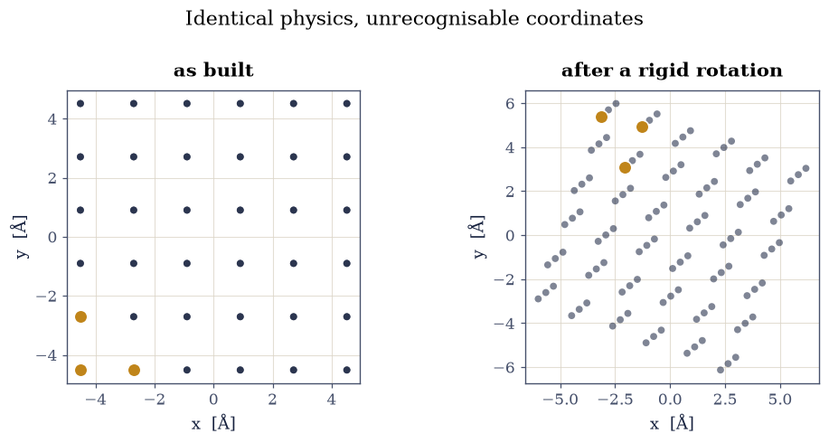
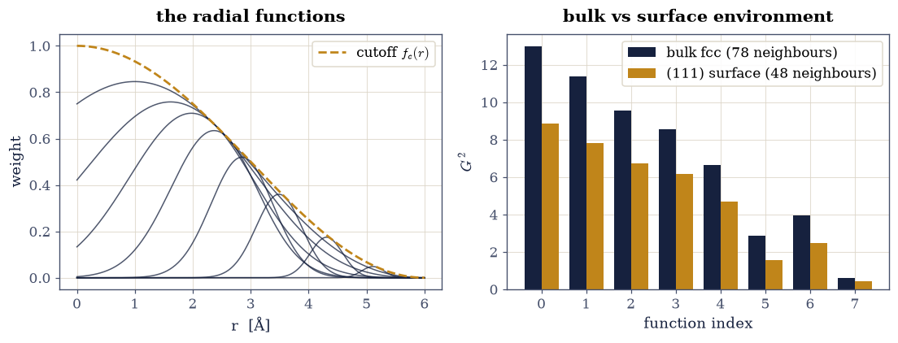
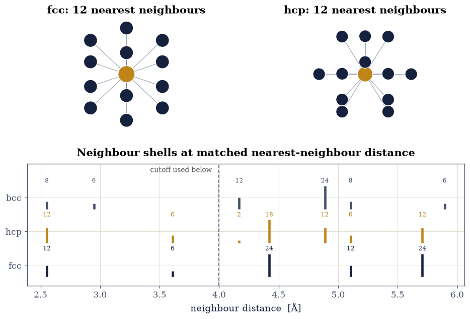
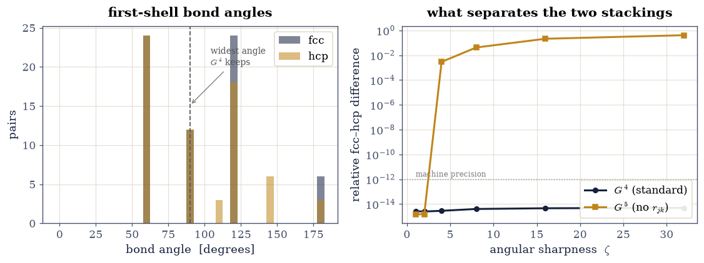
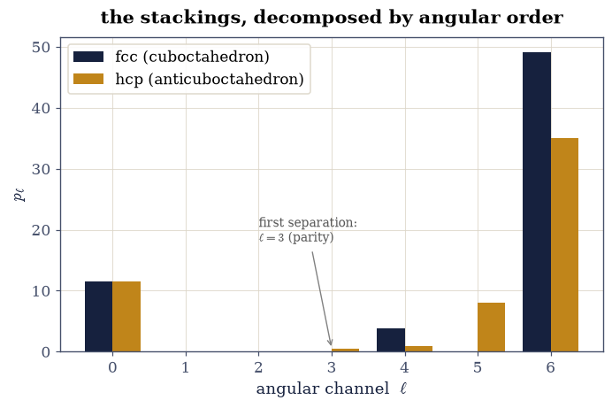

7.1 Describing an Atomic Structure#
Notebook overview#
Every method in this course so far has taken a structure and returned a number: an energy, a force, a band gap. Machine learning proposes to shortcut the expensive part by fitting that map from many examples. But a fit needs its input as a fixed-length vector of numbers, and the obvious choice — the list of atomic coordinates — is a catastrophe. Translate the system, rotate it, or simply relabel the atoms, and the coordinate vector changes completely while every physical property stays exactly the same. A model trained on coordinates would have to learn those symmetries from data, spending its capacity rediscovering facts we already know.
The fix is a descriptor: a function of the structure that is invariant to translation, rotation and permutation by construction. This notebook builds one from scratch — the atom-centred symmetry functions of Behler and Parrinello [BP07] — verifies its invariance to machine precision, and then asks the sharper question: what does it fail to distinguish? The answer turns out to be specific and instructive. Radial functions alone cannot tell face-centred cubic from hexagonal close packed, provably, because within the first two neighbour shells the two stackings have identical sets of interatomic distances. Adding angular functions is supposed to fix that, and in the standard form it silently does not, for a reason worth knowing.
Provenance. This notebook develops Lecture 10 of the course (machine learning for atomistic systems), an exercise designed by the author (Raymond Amador) to restore a lecture the original exercise set announced but never delivered. Unlike most of this course it uses no committed calculation: every structure is built here from its lattice definition, so the numbers can be re-derived from scratch. The full course credit is in the footer.
Reading a validation. Each task closes with a check against an independent fact: that a symmetry operation leaves the descriptor unchanged to machine precision, that two lattices with identical shells give identical radial descriptors, that angular functions separate what radial ones cannot. A ✗ flags a mismatch; a ✓ is strong evidence, not proof.
Scope. We build symmetry functions, not a fitted potential — the descriptor is the subject here, and §7.2 takes the descriptors this notebook produces and asks how to visualise and sample them. Structures are perfect and rattled lattices rather than trajectory snapshots, so that the shell structure is exact and the failures are provable rather than statistical.
Theory in brief#
What a descriptor has to be blind to#
The energy of an isolated system is unchanged by three operations, so any input to a model of the energy should be unchanged by them too:
Translation. Moving every atom by the same vector changes nothing physical.
Rotation. So does rigidly rotating the whole system.
Permutation. Two atoms of the same element are indistinguishable; swapping their labels is not a physical change at all.
Cartesian coordinates satisfy none of these. Interatomic distances satisfy the first two immediately, and the third if we only ever use them in sums over neighbours, which is the design that follows.
Atom-centred symmetry functions#
Behler and Parrinello [BP07] describe the environment of each atom \(i\) separately, as a vector of sums over its neighbours. Every sum is cut off smoothly at a radius \(R_c\), so that atoms entering and leaving the environment do not make the descriptor jump:
The radial functions place a Gaussian at a chosen distance \(R_s\) and ask how much neighbour density sits there. Varying the width \(\eta\) and the centre \(R_s\) across a set of functions samples the radial distribution at different resolutions:
Radial functions can only ever see the multiset of distances from atom \(i\). Two environments with the same distances are identical to every \(G^2\), no matter how many are used — which is exactly the trap Exercise 3 walks into. To see more, the descriptor has to look at angles, summing over pairs of neighbours \((j,k)\) with \(\theta_{jik}\) the angle they subtend at \(i\):
Here \(\lambda = \pm 1\) shifts the peak of the angular factor between \(\theta = 0\) and \(\theta = \pi\), and \(\zeta\) sharpens it: large \(\zeta\) resolves fine angular structure, small \(\zeta\) blurs it. The exponential and cutoff factors involve \(r_{jk}\), the distance between the two neighbours — an apparently innocent choice that Exercise 4 shows is anything but. Behler’s alternative drops it [Beh11]:
Symmetry functions are one descriptor family among several. The smooth overlap of atomic positions (SOAP) [BartokKCsanyi13] takes a different route to the same requirements: it smears each neighbour into a Gaussian density, expands that density in radial functions and spherical harmonics, and builds rotationally invariant combinations of the coefficients. It is systematically improvable in a way a hand-chosen set of symmetry functions is not, at a higher cost.
Setup#
The Setup below holds this notebook’s instruments — nothing you are asked to build. The descriptors themselves are the subject of the notebook and are built in the exercises. It is collapsed so the building stays yours; expand it whenever you want the details.
Exercise 1 — Coordinates are not a description#
Start with the failure, because it motivates everything else. Take a chunk of copper, apply the three operations the energy is blind to, and measure how much the vector of coordinates changed. If that number is large, a model reading coordinates is being handed a moving target.
Part a) Build a copper lattice, centre it on its own centroid, and apply a random rotation and a random permutation of the atom labels. Measure the Euclidean distance between the original coordinate vector and each transformed one, and compare against the root-mean-square atomic position — the natural scale of the structure itself.
Part b) Confirm the physics did not move: check that the multiset of interatomic distances is unchanged by all three operations, since that is what the energy of a pairwise system actually depends on.

Fig. 76 The same 108-atom copper crystal before (left) and after (right) a rigid rotation, with three atoms marked to show that the structure is unchanged while every coordinate is different. Rotation, translation and relabelling leave the set of interatomic distances — and therefore the energy — exactly invariant, but move the coordinate vector by more than the size of the structure itself, which is why atomic coordinates make a poor input to a fitted model.#
||X - X(translation)|| = 41.491 Å ( 7.77 × the structure size)
||X - X(rotation)|| = 89.511 Å (16.76 × the structure size)
||X - X(rotation + relabelling)|| = 80.466 Å (15.07 × the structure size)
RMS atomic position (the structure's own scale) = 5.339 Å
max change in any pair distance under translation : 1.78e-15 Å
max change in any pair distance under rotation : 5.33e-15 Å
max change in any pair distance under rotation + relabelling: 5.33e-15 Å
Validation 1 — the coordinates move, the physics does not#
Two checks that between them state the whole problem. The coordinate vector must move by at least the size of the structure under operations that change nothing, and the set of interatomic distances must not move at all. A model fed coordinates would have to learn to undo the first; a model fed distances gets the second for free.
✓ every symmetry operation displaces the coordinate vector by more than the whole size of the structure, so coordinates encode the arbitrary choice of frame and labelling at least as strongly as they encode the structure [translation: 7.77×, rotation: 16.76×, rotation + relabelling: 15.07×]
✓ while the multiset of interatomic distances is unchanged to machine precision by all three, which is why every descriptor that follows is built out of distances rather than positions [largest change in any pair distance: 5.3e-15 Å]
True
Exercise 2 — Radial symmetry functions#
Now build the first real descriptor. Equation Eq. 66 sums a Gaussian over the neighbours of one atom, so it depends only on distances and only through a sum — the two properties that buy invariance to all three operations at once.
Part a) Implement the cutoff of Eq. 65 and the radial functions of
Eq. 66, taking the neighbour distances from the neighbours instrument.
Write this one yourself — the implementation is the lesson.
Part b) Verify invariance numerically. Apply a translation, a rotation, and a permutation of the neighbour labels to an isolated cluster, and confirm the descriptor of the central atom is unchanged to machine precision in every case.
Part c) Show the descriptor is doing something: plot the radial functions against distance and compare the descriptor of a bulk atom against one in the surface layer of a slab, where the missing half-space should show up as missing neighbour density.
relative change in the descriptor under translation : 1.80e-16
relative change in the descriptor under rotation : 7.33e-17
relative change in the descriptor under permutation : 0.00e+00

Fig. 77 Left: the radial symmetry functions of Eq. eq-bp-g2, each a Gaussian of width set by η centred at Rs, multiplied by the smooth cutoff of Eq. eq-bp-cutoff which takes every one of them to zero at Rc = 6 Å. Right: the resulting descriptor for an atom in bulk fcc copper and for one in the top layer of a (111) slab. The surface atom is missing roughly half its neighbours, so every component drops, and the components probing the near shells drop least because those neighbours are the ones the surface still has.#
bulk atom: 78 neighbours within 6.0 Å; surface atom: 48
every component drops at the surface; the largest drop leaves 54.7 % of the bulk value
Validation 2 — invariant, and not vacuous#
Three checks. The descriptor must be unchanged to machine precision by all three symmetry operations, which is the property it was built for. It must nonetheless distinguish a bulk atom from a surface one, since a descriptor invariant to everything would be useless. And the surface values must be lower in every component, because the surface atom is missing neighbours rather than merely rearranged ones.
✓ translation, rotation and relabelling leave the radial descriptor unchanged to machine precision, so the invariance is exact by construction rather than approximately learned from data [translation: 1.8e-16, rotation: 7.3e-17, permutation: 0.0e+00]
✓ and yet it separates a bulk atom from a surface atom by a wide margin, so the invariance was not bought by throwing the structural information away [relative difference 0.310]
✓ with every component lower at the surface, as it must be when an environment loses neighbours rather than rearranging the ones it has [largest surviving fraction 54.7 % of the bulk value]
True
Exercise 3 — What radial functions cannot see#
Face-centred cubic and hexagonal close packed are the two ways of stacking
close-packed planes: ABCABC for fcc, ABAB for hcp. Both give every atom twelve
nearest neighbours at the same distance. The difference between them is real —
different metals choose different stackings, and the stacking-fault energy between
them is a quantity people compute — but it is subtle, and it is exactly the kind of
thing a descriptor has to be able to see.
Part a) Tabulate the neighbour shells of fcc, hcp and bcc at a cutoff of 4 Å, with all three at the same nearest-neighbour distance. Establish which pairs of phases share a shell structure and which do not.
Part b) Compute the radial descriptor of Eq. 66 for each phase at that cutoff and compare them. Predict the outcome from Part a before running it, then confirm that no choice of \(\eta\) and \(R_s\) could change it.

Fig. 78 Top: the twelve nearest neighbours of an atom in fcc (a cuboctahedron) and in hcp (an anticuboctahedron) — the same twelve atoms at the same distance, arranged differently. Bottom: neighbour shells of the three phases at a common nearest-neighbour distance of 2.553 Å, with the 4 Å cutoff of Exercise 3 marked. Inside that cutoff fcc and hcp have exactly the same shells — twelve neighbours at 2.553 Å and six at 3.610 Å — and differ only from 4.169 Å outwards, where hcp has two neighbours that fcc does not. A radial descriptor cut off at 4 Å is therefore blind to the difference between them, not approximately but identically. Body-centred cubic, with eight neighbours in its first shell rather than twelve, is distinguishable immediately.#
fcc: within 4.0 Å -> 12@2.553 Å, 6@3.610 Å
hcp: within 4.0 Å -> 12@2.553 Å, 6@3.610 Å
bcc: within 4.0 Å -> 8@2.553 Å, 6@2.948 Å
relative difference of the radial descriptors at Rc = 4.0 Å
fcc vs hcp: 7.98e-16 <- identical to machine precision
fcc vs bcc: 9.17e-02
Validation 3 — a provable blindness#
Two checks. The radial descriptors of fcc and hcp must agree to machine precision, which is a statement not about this parameter set but about every possible one: a function of the distance multiset cannot separate environments whose distance multisets are equal. And bcc must be separated comfortably, so that the failure is specific to the close-packed pair rather than a descriptor that never works.
✓ the radial descriptors of fcc and hcp are identical to machine precision, and no richer set of η and Rs could change that: inside this cutoff the two phases present the same multiset of distances, and G2 sees nothing else [relative difference 8.0e-16]
✓ while bcc, whose first shell holds eight neighbours rather than twelve, is separated easily — so the blindness is specific to the two close-packed stackings and not a descriptor that fails at everything [relative difference 0.092]
True
Exercise 4 — Angles, and a trap in the standard form#
If distances cannot separate fcc from hcp, angles must: the twelve nearest neighbours form a cuboctahedron in fcc and an anticuboctahedron in hcp, the same twelve distances arranged differently. Equation Eq. 67 is the standard angular symmetry function, so applying it should settle the matter.
Part a) Compute the first-shell bond-angle distributions of fcc and hcp and confirm that they genuinely differ. This establishes that there is something for an angular descriptor to find.
Part b) Implement Eq. 67 and apply it to the two phases at the 4 Å cutoff. Write this one yourself — the implementation is the lesson. Then explain the result: it is not the one Part a leads you to expect, and the reason is in the formula.
Part c) Implement the \(G^5\) variant of Eq. 68, which differs only by dropping the factors involving \(r_{jk}\), and compare. Then scan the angular sharpness \(\zeta\) and find where the separation appears.
fcc first-shell angles: 24@60° 12@90° 24@120° 6@180°
hcp first-shell angles: 24@60° 12@90° 3@109° 18@120° 6@146° 3@180°

Fig. 79 Left: bond-angle distributions of the twelve nearest neighbours in fcc and hcp. The two agree at 60° and 90° and part company above 100°, where fcc has 24 pairs at 120° and 6 at 180° while hcp spreads its count over 110°, 120°, 146° and 180°. Right: the relative difference between the fcc and hcp angular descriptors as the sharpness ζ is increased, for the standard G4 of Eq. eq-bp-g4 and the G5 variant of Eq. eq-bp-g5. G4 stays at machine zero for every ζ, because its cutoff on the neighbour–neighbour distance rjk discards precisely the wide-angle pairs where the two phases differ. G5, which has no such factor, separates them once ζ is large enough to resolve the angular structure.#
widest angle whose pair survives G4's r_jk cutoff at Rc = 4.0 Å: 90°
G4 fcc-hcp separation, over ζ = [1.0, 2.0, 4.0, 8.0, 16.0, 32.0]:
2.6e-15 2.5e-15 2.8e-15 4.0e-15 4.6e-15 4.9e-15
G5 fcc-hcp separation:
1.5e-15 1.5e-15 2.9e-03 4.2e-02 2.1e-01 4.1e-01
Validation 4 — the angular functions, and the one that works#
Four checks. The bond-angle distributions must genuinely differ, or there would be nothing for an angular function to find. The standard \(G^4\) must nonetheless return machine zero at every sharpness, because its \(r_{jk}\) factors discard the wide-angle pairs; the explicit statement of that mechanism is that the widest angle it keeps falls short of where the distributions part company. And \(G^5\), differing only by those factors, must separate the two phases — but only once \(\zeta\) is large enough, since a blurred angular filter averages the difference away.
✓ the first-shell bond-angle distributions of fcc and hcp genuinely differ, so an angular descriptor has something real to detect where a radial one had nothing [18 pairs fall in different angle bins]
✓ yet the standard G4 returns machine zero at every sharpness ζ: its cutoff on the neighbour-neighbour distance rjk is a cutoff on angle in disguise, and at this radius it discards exactly the wide-angle pairs where the two phases differ [largest G4 separation over the scan: 4.9e-15]
✓ which the geometry states directly: two neighbours at distance d subtending θ lie 2d sin(θ/2) apart, so the widest angle surviving the rjk cutoff falls below the range where the fcc and hcp distributions separate [widest surviving angle 90°, while the distributions differ above 100°]
✓ and G5, which differs from G4 only by dropping those factors, separates the two stackings — but only for sharp angular filters: at ζ = 1 the difference is still machine zero, because a broad filter averages over precisely what distinguishes them [G5 separation 1.5e-15 at ζ = 1, 4.1e-01 at ζ = 32]
True
Why the smooth filters are blind at low ζ#
The \(\zeta = 1\) result is not a numerical accident but a small theorem. At \(\zeta = 1\) the angular sum is, up to constants, \(\sum_{j<k} \cos\theta_{jik}\), and for neighbours all at the same distance that sum is fixed by
with \(n\) the number of neighbours. Both the cuboctahedron and the anticuboctahedron have \(\sum_j \hat{\mathbf r}_j = \mathbf 0\) by symmetry and both have \(n = 12\), so the two sums are equal before any structure is looked at. Only the higher moments of the angular distribution — reached by \(\zeta \ge 4\) — carry the difference.
fcc: n = 12, ||Σ r̂|| = 3.09e-15, Σcos θ = -6.000000, predicted -6.000000
hcp: n = 12, ||Σ r̂|| = 2.96e-15, Σcos θ = -6.000000, predicted -6.000000
✓ the two stackings have the same sum of neighbour-pair cosines, exactly as eq-cos-sum requires once both shells are found to have twelve neighbours and a vanishing sum of unit vectors — which is why no ζ = 1 angular function, however parametrised, can tell them apart [got -6 vs expected -6 (rtol=1e-06, atol=1e-10)]
True
Exercise 5 — SOAP-lite: the \(\ell\) at which the stackings separate#
Exercise 4 found the separation by scanning a sharpness parameter; the SOAP construction [BartokKCsanyi13] finds it by decomposition. Expand the neighbour arrangement in spherical harmonics,
and the power spectrum \(p_\ell\) is rotationally invariant channel by channel — under a rotation the \(c_{\ell m}\) mix only within fixed \(\ell\), by a unitary Wigner matrix, so each \(p_\ell\) is untouched. The spectrum therefore answers a sharper question than any scalar could: not whether two environments differ, but at which angular resolution the difference first lives.
For the two close-packed first shells the answer is a theorem before it is a measurement. Under inversion \(Y_{\ell m}(-\hat{\mathbf r}) = (-1)^\ell\,Y_{\ell m}(\hat{\mathbf r})\), so any inversion-symmetric neighbour set — the fcc cuboctahedron — has every odd-\(\ell\) coefficient cancel in pairs, exactly. The hcp anticuboctahedron has no inversion centre, so its odd channels survive. The prediction: \(p_1\) and \(p_2\) vanish for both shells (the \(\zeta \le 2\) blindness of Exercise 4, reappearing as absent multipoles), and the first channel separating the stackings is \(\ell = 3\) — zero for fcc by parity, finite for hcp.
Part a) Implement Eq. 70 and verify rotational invariance of every channel to machine precision. Write this one yourself — the implementation is the lesson.
Part b) Compute the ladder for both first shells and test the theorem: identical channels through \(\ell = 2\), exact zeros at every odd \(\ell\) for fcc, and first separation at \(\ell = 3\).

Fig. 80 The angular power spectrum of Eq. eq-soap for the fcc and hcp first shells, channel by channel. The two stackings agree exactly through ℓ = 2 — including the exact zeros at ℓ = 1 and 2 that are the multipole face of Exercise 4’s ζ ≤ 2 blindness — and part company first at ℓ = 3, where the fcc cuboctahedron’s inversion symmetry forces an exact zero while the hcp anticuboctahedron, with no inversion centre, keeps a finite octupole. Every odd fcc channel vanishes by the same parity argument. Where the ζ-scan found the separation by turning a knob, the decomposition names the exact angular order at which it lives.#
l : 0 1 2 3 4 5 6
p_fcc : 11.4592 0.0000 0.0000 0.0000 3.7600 0.0000 49.1714
p_hcp : 11.4592 0.0000 0.0000 0.4642 0.9748 7.9785 35.0068
rotational invariance 1.4e-14; fcc odd-l max 2.3e-29; first separating channel l = 3
Validation 5 — a theorem’s worth of zeros#
Four checks. Every channel must be rotationally invariant to machine precision — the property the power spectrum exists to provide, and the gate that catches a swapped angle convention. Every odd fcc channel must vanish exactly, inversion parity cancelling coefficients in pairs. The two shells must agree exactly through \(\ell = 2\) — Exercise 4’s \(\zeta \le 2\) blindness, now as absent multipoles. And the first separating channel must be \(\ell = 3\): the hcp octupole that no radial function, and no low-order angular filter, could ever have seen.
✓ every power-spectrum channel is rotationally invariant to machine precision: the c_lm mix unitarily within fixed l, and their norm cannot notice a rotation [max change under a random rotation: 1.4e-14]
✓ every odd-l channel of the fcc shell vanishes exactly: inversion parity cancels Y_lm coefficients in pairs, a theorem the arithmetic merely confirms [largest odd-l fcc power: 2.3e-29]
✓ the two stackings agree exactly through l = 2 -- the multipole face of the zeta <= 2 blindness Exercise 4 proved through moments [max |p_fcc - p_hcp| for l <= 2: 1.1e-30]
✓ and the first channel that separates them is l = 3: the anticuboctahedron keeps a finite octupole where the cuboctahedron's parity forbids one [first separation at l = 3; p_3(hcp) = 0.464]
True
Notebook summary#
We asked what it takes to hand an atomic structure to a fitting method, and found that the obvious answer fails immediately: rotating or relabelling a copper crystal moves its coordinate vector by more than the size of the crystal while leaving every interatomic distance, and therefore the energy, exactly where it was.
Building the descriptor out of sums over neighbour distances bought all three invariances by construction, verified here to machine precision, without making the descriptor vacuous — a surface atom and a bulk atom remain far apart. But invariance is not the whole requirement. Cut off at 4 Å, fcc and hcp present identical multisets of distances, so their radial descriptors agree to machine precision and no choice of parameters could do otherwise.
The angular functions that ought to rescue this turned out to have a trap in their standard form. Two neighbours at distance \(d\) subtending an angle \(\theta\) lie \(2d\sin(\theta/2)\) apart, so \(G^4\)’s cutoff on the neighbour–neighbour distance is a cutoff on angle in disguise: at this radius it keeps nothing wider than about 90° and discards exactly the wide-angle pairs where the two stackings differ. The \(G^5\) variant, identical but for those factors, separates them — and then only for sharp angular filters, since Eq. 69 forces the \(\zeta = 1\) response of the two shells to be equal whatever the parametrisation.
The moral is not that symmetry functions are bad. It is that a descriptor’s blind spots are properties of its functional form, they are not always where intuition puts them, and they can be found by construction rather than discovered later in a model that quietly cannot represent what it was asked to.
Outlook#
Systematic completeness. SOAP [BartokKCsanyi13] reaches the same invariances by expanding a smoothed neighbour density in radial functions and spherical harmonics, which can be converged by raising the expansion order rather than by adding hand-picked functions. The trade is cost and interpretability.
Descriptors you have already built. The Steinhardt order parameter \(q_6\) of §2.1 is a descriptor by this definition, invariant to all three operations and designed to separate icosahedral from close-packed order — a single-purpose ancestor of the vectors built here.
From descriptor to potential. Feeding these vectors to a neural network, one per element, and summing the atomic outputs gives a Behler–Parrinello potential [BP07]. Its accuracy is bounded above by what the descriptor can distinguish, which is why this notebook came first.
The many-body completeness question. Two distinct environments can share all their two- and three-body correlations, so even angular descriptors have degeneracies [PWBartok+20]. The fcc/hcp case here is a mild, curable instance.
References#
Albert P. Bartók, Risi Kondor, and Gábor Csányi. On representing chemical environments. Physical Review B, 87(18):184115, 2013. doi:10.1103/PhysRevB.87.184115.
Jörg Behler. Atom-centered symmetry functions for constructing high-dimensional neural network potentials. The Journal of Chemical Physics, 134(7):074106, 2011. doi:10.1063/1.3553717.
Jörg Behler and Michele Parrinello. Generalized neural-network representation of high-dimensional potential-energy surfaces. Physical Review Letters, 98(14):146401, 2007. doi:10.1103/PhysRevLett.98.146401.
Sergey N. Pozdnyakov, Michael J. Willatt, Albert P. Bartók, Christoph Ortner, Gábor Csányi, and Michele Ceriotti. Incompleteness of atomic structure representations. Physical Review Letters, 125(16):166001, 2020. doi:10.1103/PhysRevLett.125.166001.